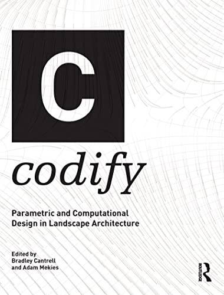
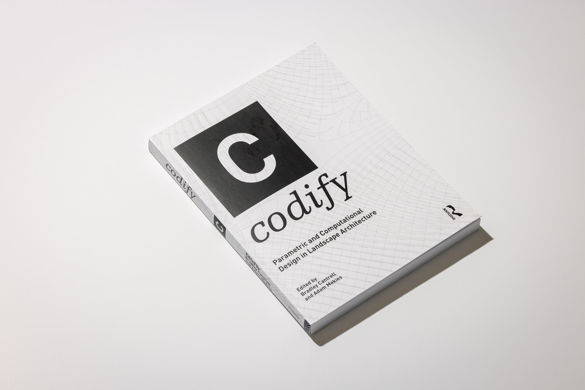
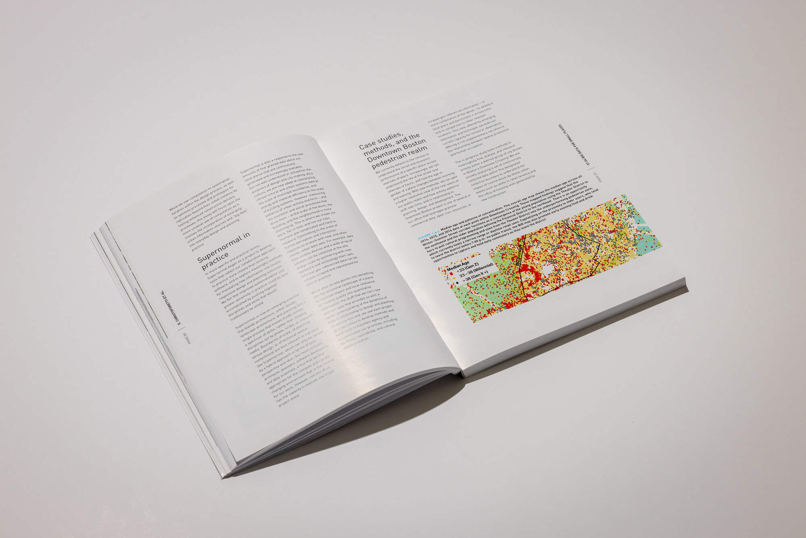
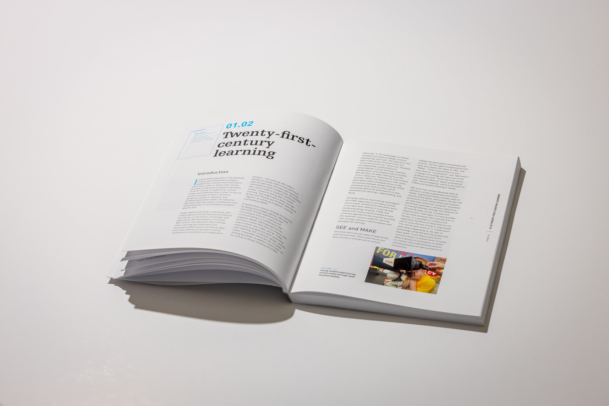
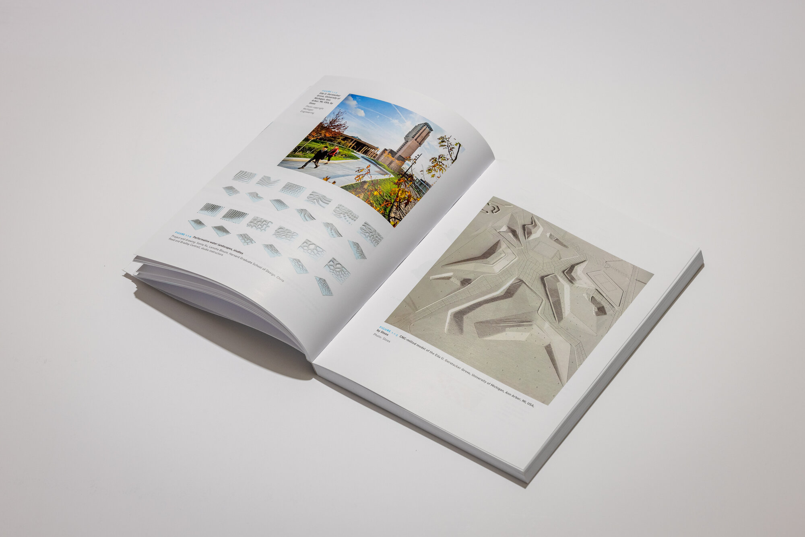
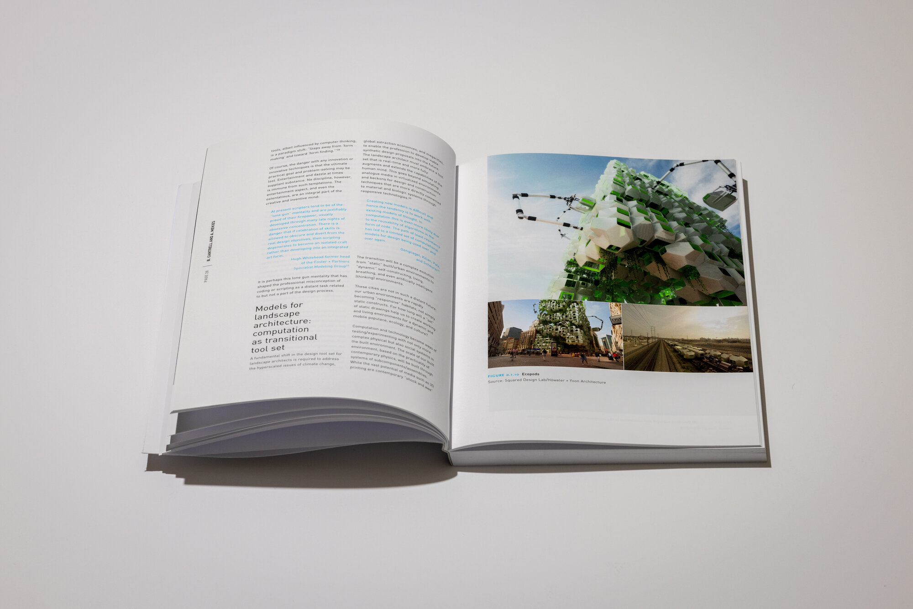

Codify addressed the question of how landscape architecture might develop computational methods specific to its disciplinary concerns. Architecture's parametric turn had produced a decade of formally complex buildings, and the editors' position was that landscape's computational engagement would need to produce something different: the tools for managing ecological complexity, indeterminacy, and temporal depth rather than generating novel geometries.
The book argued that ecology, technology, and urbanization were collapsing into a single sector where landscape architecture was uniquely positioned to operate. Code, understood broadly as algorithm, protocol, and executable instruction, was proposed as the essential language for managing this convergence. The publication explored multiple dimensions of codification:
Generative Design: Algorithms that could generate planting plans adapting to microclimates, grading designs optimizing water retention, or infrastructure layouts responding to ecological gradients. Rather than manually placing thousands of elements, designers could write rules: "Place a Populus deltoides wherever soil moisture exceeds 40% and slope is less than 5 degrees."
Managing Indeterminacy: Unlike architectural parametricism, which often sought precise formal control, landscape parametricism engaged indeterminacy as a design condition. Code provided rules (a genotype) generating landscapes (phenotypes) that could adapt to changing conditions. The designer became curator of algorithms, establishing parameters within which systems could evolve.
Tool-Making: The book championed a shift from using software to making software. Landscape architects needed to become "tool-makers," opening the black box of commercial applications to write algorithms calibrated to specific ecological questions. This required literacy in scripting languages (Python, JavaScript) and visual programming environments (Grasshopper) that enabled customization of computational workflows.
The edited volume brought together practitioners, researchers, and educators demonstrating computational approaches across contexts, from parametric planting design to algorithmic hydrology to machine learning applications. The diversity of contributions illustrated that computational landscape architecture was not a singular method but an expanding field of approaches.





The volume is organized into four sections, framed by an introduction, "Coding Landscape," by Bradley Cantrell and Adam Mekies.
Codify articulated a fundamental shift: from using computation for landscape architecture to thinking computationally about landscape architecture. This distinction separated the book from software tutorials or digital technique manuals, proposing that computation was not merely a tool for efficiency but a mode of thought capable of engaging landscape's specific complexities.
Richard Hindle, commenting on the book, stated: "Codify convincingly argues that Landscape Architecture is uniquely positioned to define this sector of technology, and in the process redefine itself." This observation captured the book's disciplinary ambition of not merely adopting computational methods from adjacent fields but developing approaches native to landscape's concerns with ecology, territory, and temporal process.
The book also advanced the concept of the landscape architect as algorithm curator. If ecological systems are too complex to fully specify, and if environmental conditions are too variable to predict, then design must operate through establishing rules and parameters within which outcomes emerge. The designer's role shifts from determining form to calibrating process, setting the conditions within which landscapes self-organize, adapt, and evolve.
The emphasis on tool-making had pedagogical implications developed through concurrent work at Harvard GSD and UVA. Curricula evolved to include scripting, electronics prototyping (Arduino), and geospatial programming, skills enabling students to create rather than merely consume computational tools. This "white box" pedagogy, as opposed to "black box" software operation, empowered designers to customize their instruments to disciplinary needs.